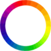

<canvas id='canvas'></canvas>
</img>
<script src='leap.js'></script>
<script>

  //Keeping a global variable for the oldFrame
  var oldFrame;

  //radius for hand and finger
  var fingerRadius = 10;
  var handRadius = 50;

  var hue = 120;

  var colorWheel = document.getElementById("colorWheel");

  // Create our canvas variable, using the canvas DOM element
  var canvas = document.getElementById( 'canvas' );

  // Resize the canvas so that it takes up the whole screen
  canvas.width = document.body.clientWidth;
  canvas.height = document.body.clientHeight;

  // Create the 2D rendering context
  var ctx = canvas.getContext( '2d' );

  // Setting the zero of the canvas, so that is corresponds
  // with the leap coordinate system
  ctx.translate( canvas.width/2 , canvas.height );


  // This is the function we will call every loop
  // which passes frame data into our function
  function draw( frame ) {


    if(!oldFrame){
      oldFrame = frame;
    }

    // draw old frame
    ctx.beginPath();

    // Clear the last frame drawn
    ctx.rect( -canvas.width/2 , -canvas.height , canvas.width , canvas.height );

    //Sets the fill style to the one we have defined in the 'checkDialOut' method
    ctx.fillStyle = "hsl(" + hue + ",80%,50%)";
    ctx.fill();

    // Create an array of all the pointables in this frame
    var pointables = frame.pointables;

    // Setting the color to red for the pointables
    ctx.fillStyle = 'rgba(255,255,255,.5)';

    // Loop through all of the pointables,
    // drawing a point at each tipPosition
    for ( var i = 0; i < pointables.length; i++ ) {

      var pointable = pointables[i];

      // Getting the pointables position
      var pos = pointable.tipPosition;

      // Defining the radius of the circle
      var radius = fingerRadius;

      // Draw the circle at the tip position
      ctx.beginPath();
      ctx.arc( pos.x-radius/2 , -pos.y-radius/2 , radius , 0 , 2*Math.PI );
      ctx.fill();

    }


    //Create an array of all the hands in the frame
    var hands = frame.hands;

    // Loop through all of the pointables,
    // drawing a point at each palmPosition
    for ( var i = 0; i < hands.length; i++ ) {

      var pointable = hands[i];

      // Getting the pointables position
      var pos = pointable.palmPosition;

      // Defining the radius of the circle
      var radius = handRadius*2;

      ctx.drawImage(colorWheel, pos.x - radius/2 , - pos.y - radius/2);
   
    }


    checkForDialOut(frame);

    oldFrame = frame;
    

  };

  // Sets up the controller
  var controller = new Leap.Controller();

  // Defines the controller's frame function
  controller.on( 'frame' , draw );

  // Connect the controller to get frames moving
  controller.connect();


  /*
  
  DIAL OUT:

  Checks to see if the finger tip position has crossed the border, 
  and if it has, calculates the angle at which it crosses. 

  As an example this will change our background color

  */

  function checkForDialOut(frame){
    
    // Makes sure that both this frame and the old frame
    // have exactly 1 hand and 1 pointable
    var curFrameBool = frame.hands.length == 1 && frame.pointables.length == 1;
    var oldFrameBool = oldFrame.hands.length == 1 && oldFrame.pointables.length == 1;

    if(curFrameBool && oldFrameBool){

      // Gets the difference between the hands and the pointables
      // in polar coordinates
      var curDif = polarDif(frame);
      var oldDif = polarDif(oldFrame);

      // Checks to see if the finger has 'broken' the hand radius
      if( curDif.r >= handRadius && oldDif.r < handRadius){

        // If the border has been 'broken'
        // Set the hue to the angle at which the seal was broken
        hue = angleToHue(curDif.theta);
      
      }

    }

  }

  /*
    polarDif:
    gets the different between the hand an finger
    in polar coordinates
  */
  function polarDif(frame){

    var dif = getDif(frame);
    var polar = toPolar(dif);

    return polar;

  }

   /*
    toPolar:
    Converts a vector to polar coordinates
  */
  function toPolar(vector){

    var squares = vector.x * vector.x + vector.y * vector.y; 
    var r = Math.pow( squares , .5);

    var theta = Math.atan2( vector.x , vector.y );

    return { r : r, theta : theta };

  }

  /*
    getDif:
    gets difference between hand and finger
  */
  function getDif(whichFrame){

    var pointPos = whichFrame.pointables[0].tipPosition;
    var handPos = whichFrame.hands[0].palmPosition;

    var dif = {
      
        x: pointPos.x - handPos.x,
        y: pointPos.y - handPos.y,

    };

    return dif;

  }

  /*
    angleToHue:
    converts a radian angle, and returns an
    angle to be used for hue
  */
  function angleToHue(angle){

    var degree = radToDegree(angle);
    
    if(degree < 0){
      degree += 360;
    }

    return degree;

  }


  /*
    radToDegree:
    converts radians to degrees
  */
  function radToDegree(angle){

    var degree = angle * 180 / Math.PI;

    return degree;

  }

</script>

<style>
  
  html, body { 
    width: 100%; 
    height: 100%; 
    margin: 0; 
    padding: 0
  }

  #canvas { 
    position: fixed; 
    top: 0; 
    left: 0;
  }

</style>

